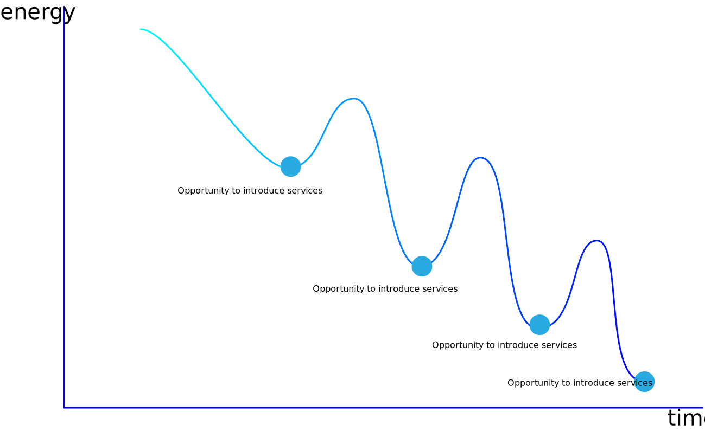

Magicar
Magicar is a real project when I attended the special topic design of Dr. Wang in 2018.The whole workshop continued for two weeks.I did the research with a teamate and drew a rough idea of automatic drive in theme parks by myself.
Pass through the fild research,we found that there are a number of strong willings to join the service when after a long walk between two play projects.It's the key to help the tourist to buy and accede to the service.